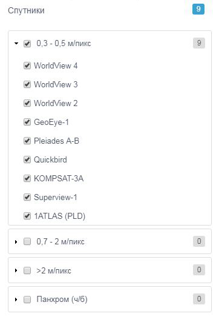
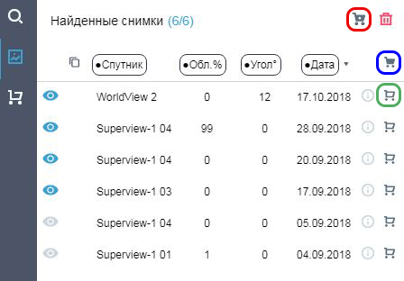

Каталог-Космоснимки — приложение для поиска, подбора и заказа космических снимков с различных спутников дистанционного зондирования Земли. Свои данные предоставляют крупнейшие мировые операторы спутниковых систем: DigitalGlobe, Airbus Defence and Space, Роскосмос и другие. Клиент имеет возможность заказать актуальные космические снимки на любую доступную территорию на текущий день. Поиск и отбор космоснимков возможен без регистрации, для их заказа необходимо зарегистрироваться в приложении. В ознакомительном режиме поиска и отбора пользователю будут доступны квиклуки (загрубленные изображения) и текстовые метаданные космоснимков.
О приложении
Быстрая инструкция по шагам 1-3
Шаг 1 — задать условия поиска
-
Задать территорию интереса возможно тремя способами: воспользоваться строкой поиска района, загрузить векторный контур из файла (см. раздел “Загрузка контура поиска из файла”) или нарисовать границу в окне карты с помощью инструментов;
-
Поисковая строка позволяет находить объекты по следующим параметрам: району, кадастру, координатам (форматы - градусы, минуты, секунды / десятичная дробь/ в проекции EPSG:3857 / в проекции EPSG:3395) и по ID (идентификационному номеру) космического снимка на заданный район.
-
Задать период съемки, указав начальную и конечную дату периода. У вас есть возможность поиска космоснимков в соответствии с необходимыми вам сезонными требованиями. Для этого в строке периода поиска указывается необходимый месячный интервал в пределах нужного временного периода (годового). После необходимо активировать иконку «Данные за каждый год»;

- Выбрать спутники;

- Нажать кнопку "Найти снимки".

Шаг 2 — отобрать снимки
- В результатах поиска добавить интересующий снимок в Корзину, для чего кликнуть по иконке корзины
- Если в процессе отбора была включена видимость определенных снимков, то их также можно поместить в Корзину нажав на иконку, обведенную красным кругом
- Еще один вариант отбора позволяет поместить в Корзину все найденные снимки

-
Результаты поиска и отбора снимков можно скачать (см. раздел Скачивание результатов) или запомнить по ссылке (см. раздел Сохранение результатов по ссылке).
Шаг 3 — оформить заказ
-
Для оформления заказа необходимо авторизоваться или зарегистрироваться;
-
Нажать кнопку Оформить заказ в нижней части левой панели;

-
Заполнить необходимые поля формы и нажать Заказать. На указанный Вами адрес электронной почты придет письмо с подтверждением заказа;
-
Специалисты компании СКАНЭКС свяжутся с вами по вопросу выполнения заказа.
Стереоснимки
Приложение также позволяет выделять и скачивать стереоснимки. После того как вы задали параметры поиска, в таблице найденных снимков вы обнаружите следующую иконку:

Если в вашей выборке имеются стереопары, то вы можете их отсортировать. Функция доступна для космических снимков операторов спутниковых данных Airbus Defence and Space и DigitalGlobe.
Для загрузки контура района поиска необходимо нажать кнопку Загрузить контур на верхней панели инструментов

Поддерживаются следующие форматы векторных файлов: shp, tab, mif, kml, json. Для того чтобы загрузить границы в форматах, которые состоят из нескольких файлов (shp, tab, mif), необходимо все файлы предварительно скопировать в zip-архив и потом архив загрузить в приложение. Тип геометрии зоны поиска может быть: точкой, линией, полигоном.